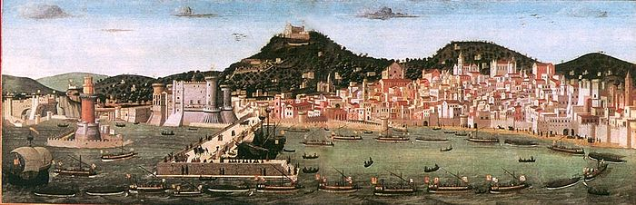
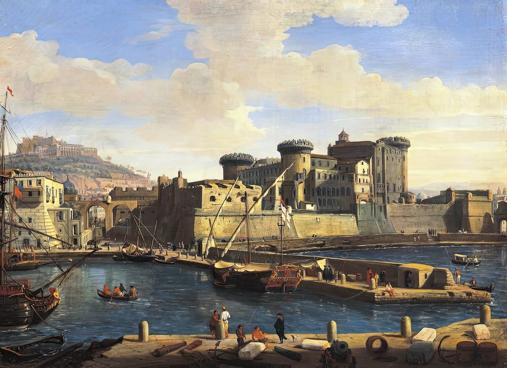
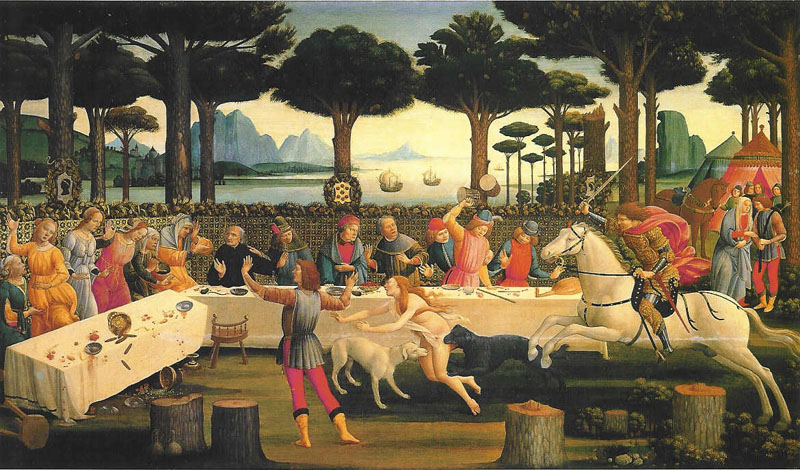
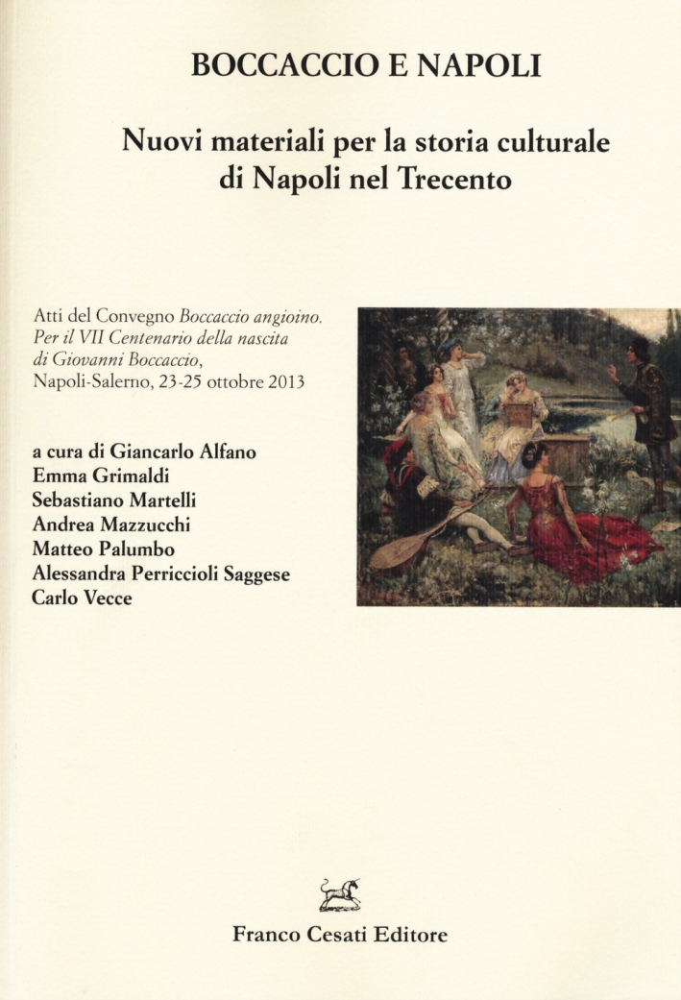

Autore: Francesco Rosselli
Data di pubblicazione: 1472-1473
Oggetto: dipinto realizzato tramite tempera su tavola che raffigura la Napoli del XIV e XV secolo
Tipo: File di immagine
esplora
Autore: Caspar van Wittel
Data di pubblicazione: 1702
Oggetto: Olio su tela conservato al Museo Nazionale Di San Martino, Napoli
Tipo : File di immagine
esplorao
o

Autore: Sandro Botticelli
Data di pubblicazione: 1483
Oggetto: Dipinto a tempera su tavola (82x142 cm) di una serie di quattro pannelli
Significato: rappresentazione dell'ambiente socio-culturale cortese
Tipo: File di Immagine
esplora
Autore: Giancarlo Alfano, Emma Grimaldi, Sebastiano Martelli, Andrea Mazzucchi, Matteo Palumbo, Alessandra Perriccioli Saggese e Carlo Vecce (pubblicata da Franco Cesati Editore)
Data di pubblicazione: 2015
oggetto: Saggio di raccolta di studi accademici che raccoglie gli atti di un convegno internazionale svoltosi nel 2013 per il settimo centenario della nascita di Giovanni Boccaccio
Tipo : File di testo
esplora